004
赛博全景监狱
A highly digitalized living space becomes a cyber panopticon: behaviours, emotions, and choices are recorded in real time and turned into footprints. AI extracts body nodes; connecting lines cut and refill fabric into new materials for draping. Digital print, algorithmic silhouette, and 3D world-building stage a garment system inside total surveillance.
高度数字化的生活空间成为赛博全景监狱：行为、情绪与选择被实时记录并转化为足迹。AI 提取身体节点，连线切割并以黑色面料填充，形成新材料用于 draping。数码印花、算法廓形与三维世界观搭建，将服装系统置于全面监控之中。
Look
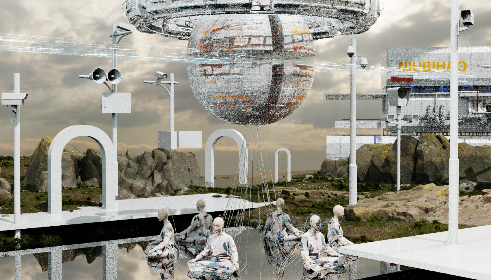
Look · 3D world-view construction
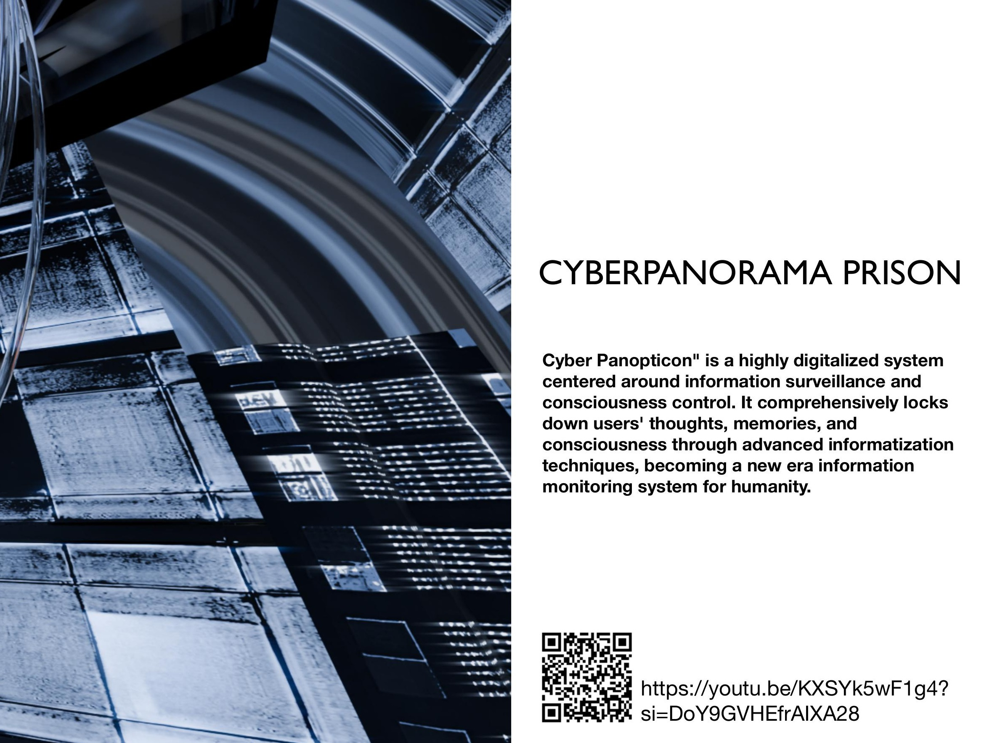
Look · Digital panopticon cover crop
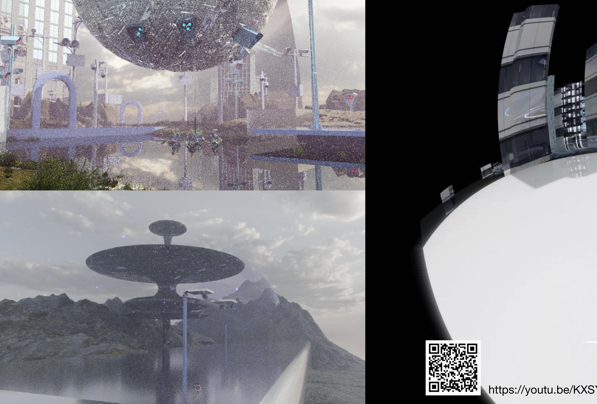
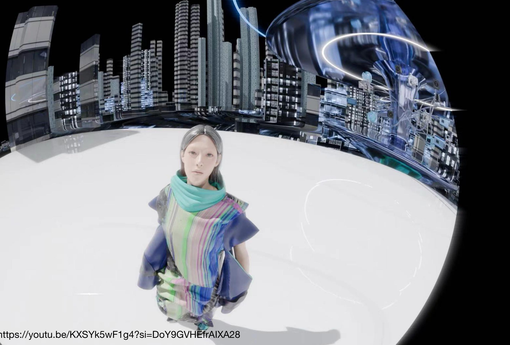
Look · Moving image / project video frames
Lookbook · World cover board (HD)
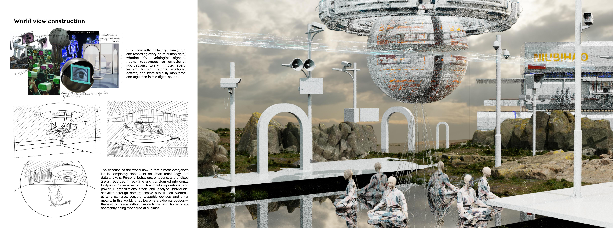
Lookbook · 3D construction board (HD)
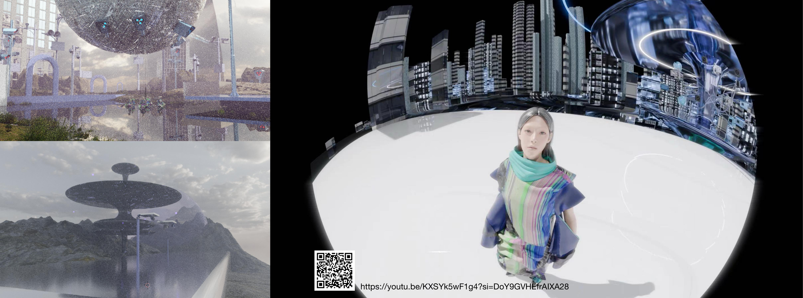
Lookbook · Architecture / cell board (HD)
Process
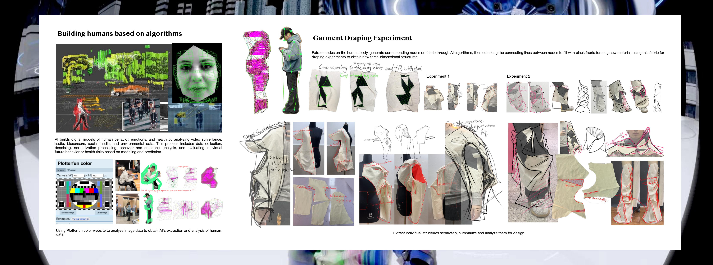
Process · Algorithm body building
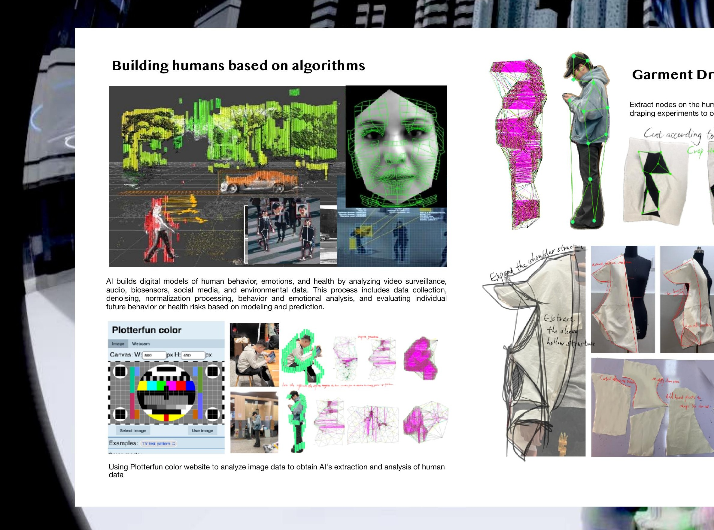
Process · Algorithm body crop
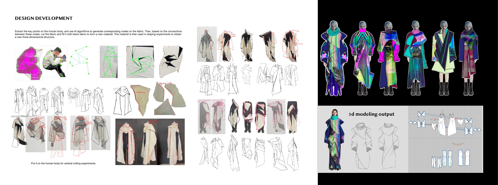
Process · Node cutting & draping
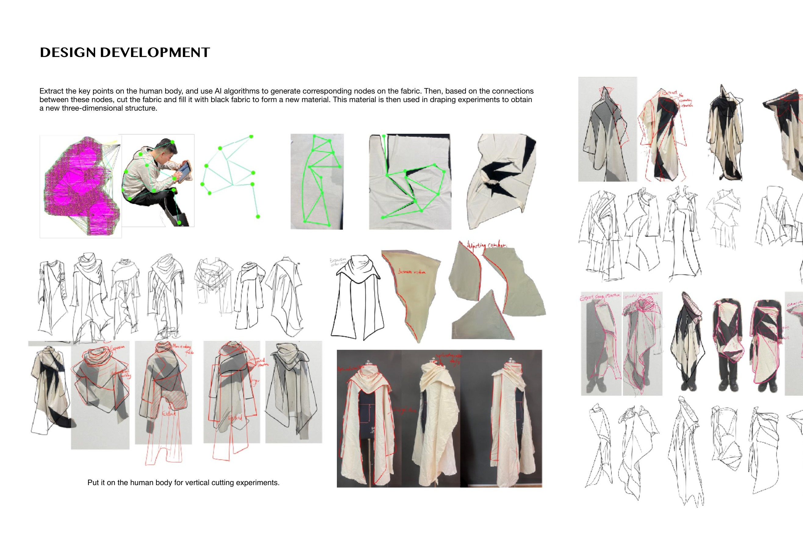
Process · Draping detail crop
Detail
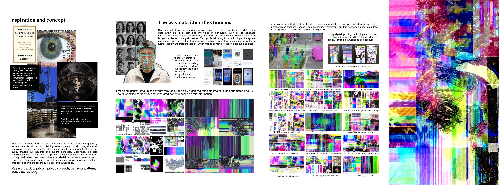
Detail · Digital print fabric development
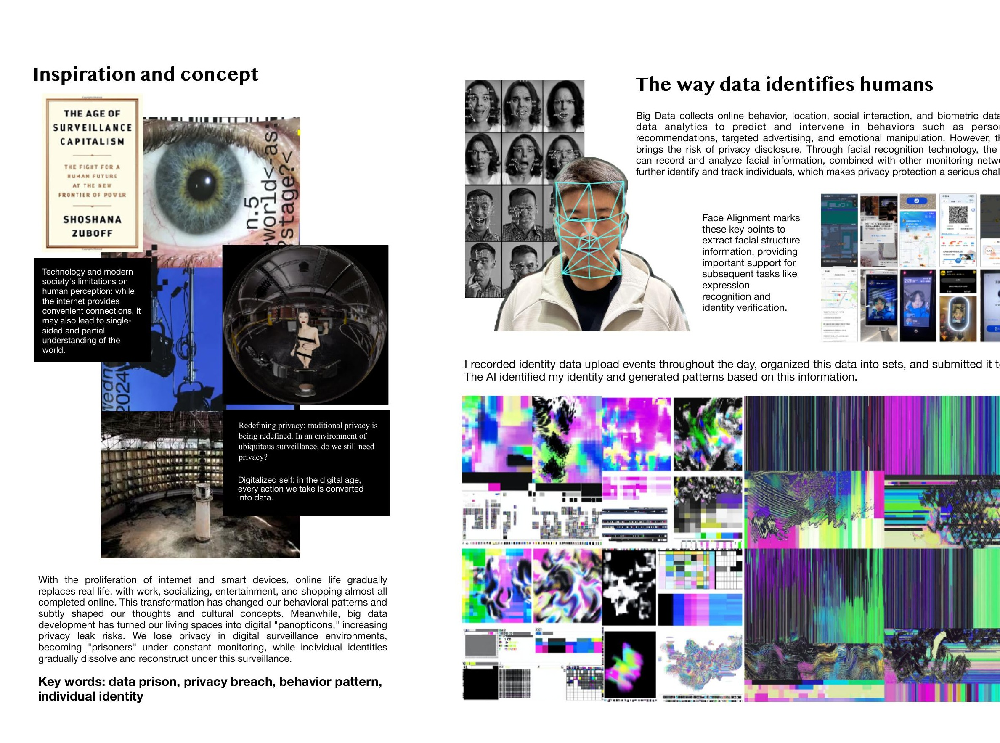
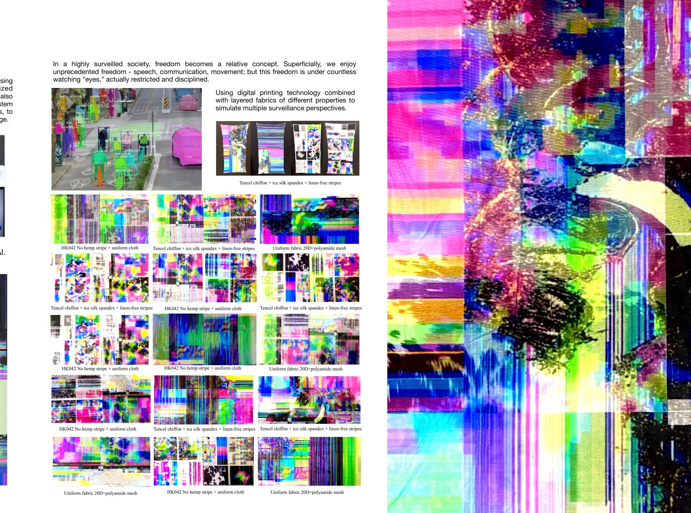
Detail · Print fabric close crops
Video
Project video · Open on YouTube